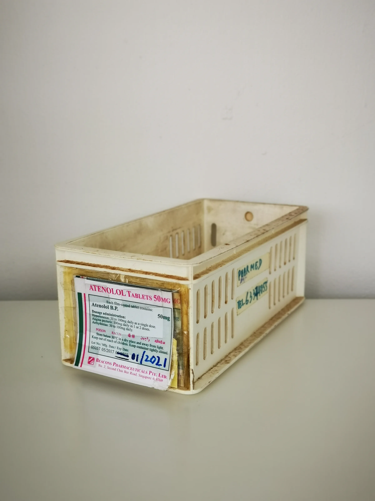
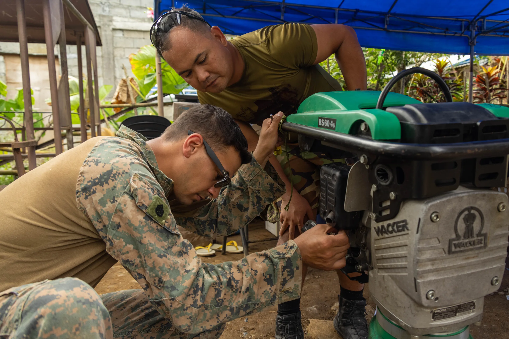

Learn how to effectively evaluate Samsung Pharm Whitening for wholesale purchases, focusing on key buyer insights and logistics.
When it comes to sourcing products for clinics, spas, and wellness centers, professional buyers face a myriad of challenges. One of the most significant is ensuring the quality and reliability of the products they purchase. Samsung Pharm Whitening has become a popular choice in the IV & Wellness category, but how can buyers confidently navigate the wholesale ordering process? Understanding the nuances of this product and the procurement process is crucial for making informed decisions that will impact client satisfaction and business success.
This guide aims to equip professional buyers with the knowledge they need to evaluate Samsung Pharm Whitening effectively. By understanding the key factors involved in sourcing this product, buyers can streamline their procurement processes, mitigate risks, and ensure they are making the best choices for their clients and businesses.
Key Takeaways
- Understand the importance of supplier communication and product documentation to ensure quality assurance.
- Evaluate packaging options and batch visibility for enhanced product integrity.
- Consider minimum order quantities (MOQ) and reorder planning for efficient inventory management.
- Assess shipping logistics to guarantee timely delivery to your location.
- Utilize a comprehensive checklist to streamline the quote request process and avoid missing critical details.
What this guide covers
- Understanding Samsung Pharm Whitening
- Buyer scenarios and planning needs
- Comparison criteria for evaluating options
- Checklist for requesting quotes
- Logistics: shipping, packing, and documentation
- MOQ and reorder planning
- Frequently asked questions
What buyers should understand first

Samsung Pharm Whitening is a product designed for aesthetic enhancement, commonly used in clinics and wellness centers. It is essential for buyers to grasp the basic characteristics of this product, including its formulation, intended use, and the benefits it offers to clients. While specific treatment protocols and results should be avoided in this context, understanding the product's role in the wellness industry is crucial for effective procurement. Buyers should familiarize themselves with the product's composition, common applications, and how it fits into their service offerings to make informed purchasing decisions.
Which buyers is this most relevant for?
This guide is particularly relevant for various types of buyers, including clinic managers, spa owners, resellers, and distributors. Each of these buyer scenarios may have different order planning needs. For instance, clinics may require consistent stock for ongoing treatments, while resellers might focus on bulk purchasing for retail. Understanding the unique requirements of each business type will help buyers evaluate Samsung Pharm Whitening more effectively. Additionally, buyers should consider their client demographics and treatment trends in their area to tailor their orders accordingly.
How to compare options before ordering
Before placing a wholesale order for Samsung Pharm Whitening, buyers should establish a set of comparison criteria. Here are some practical aspects to consider:
- Product Type: Ensure you are sourcing the correct variant of Samsung Pharm Whitening that meets your needs, as there may be different formulations available.
- Brand Reputation: Research the supplier's reputation and reliability in the market. Look for reviews or testimonials from other buyers.
- Packaging: Evaluate the packaging options available, as this can impact storage and usability. Consider if the packaging is suitable for your business's operational needs.
- Batch/Expiry Visibility: Check if the supplier provides clear information on batch numbers and expiry dates to ensure product freshness and compliance.
- Supplier Communication: Assess how responsive and informative the supplier is during the inquiry process. Good communication can prevent misunderstandings and ensure smoother transactions.
- Destination Requirements: Consider any specific shipping requirements based on your location, including potential customs regulations.
Buyer checklist before requesting a quote


- Confirm the product specifications and variants needed, including any specific formulations.
- Determine your minimum order quantity (MOQ) based on your business needs.
- Gather documentation requirements for your region to ensure compliance.
- Prepare shipping details, including destination and preferred shipping methods to streamline logistics.
- List any additional questions or concerns for the supplier to clarify before placing an order.
- Ensure you have a budget in mind for the wholesale order, factoring in potential shipping and handling costs.
Shipping, packing and documentation questions
Logistics are a critical aspect of the wholesale ordering process. Buyers should consider the following questions:
- What are the shipping options available for my location, and what are the associated costs?
- How will the products be packed to ensure they arrive safely and in good condition?
- What documentation is required for customs clearance, and can the supplier assist with this?
- Can the supplier provide tracking information once the order is shipped to monitor delivery status?
- What are the expected lead times for delivery, and how can I ensure they align with my inventory needs?
MOQ, quotation and reorder planning
Understanding minimum order quantities (MOQ) is essential for effective procurement. Buyers should prepare by determining how many units they need based on their business model and client demand. Additionally, consider any variants of Samsung Pharm Whitening that may be required for different applications. When requesting a quote, include all relevant details such as quantities, product specifications, and destination information. SOLA can assist in confirming current availability and providing a wholesale quotation tailored to your needs. Establishing a reorder plan based on sales trends can help maintain consistent stock levels and avoid shortages.
FAQ
What is the MOQ for Samsung Pharm Whitening?
The MOQ can vary by supplier, so it's essential to confirm this during your inquiry.
How can I ensure product quality?
Request documentation from the supplier, including batch numbers and expiry dates, to verify quality and compliance.
What shipping options are available?
Shipping options will depend on the supplier and your location. Always inquire about available methods and associated costs.
Can I reorder easily?
Establish a reorder plan based on your sales and inventory levels to ensure consistent supply and prevent stockouts.
How do I request a quote?
Prepare your requirements and reach out to the supplier with all necessary details for a quote, including product specifications and quantities.
Contact SOLA for wholesale quotation via WhatsApp.
Planning a wholesale request?
Send product names, quantities and destination for a tailored discussion.
Contact SOLA on WhatsApp →General educational content for professional buyers. Not medical, legal, regulatory or import advice.
Image sources: Medicine storage container 09.jpg by Wikimedia Commons contributor (CC0, 2736x3648 px); Balikatan 25- U S , Philippine forces construct multi-purpose warehouse, prepare medical supplies to local community (8962076).jpg by Lance Cpl. Roger Annoh (Public domain, 7520x5016 px).